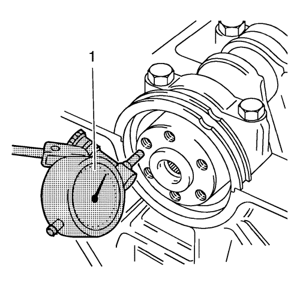
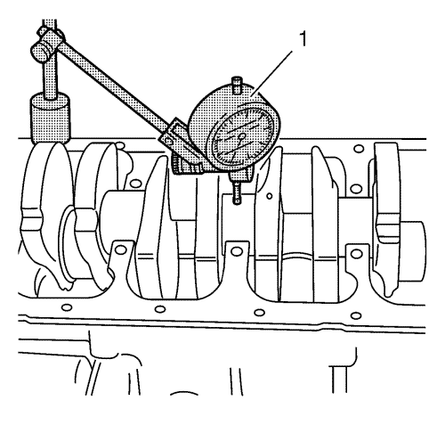
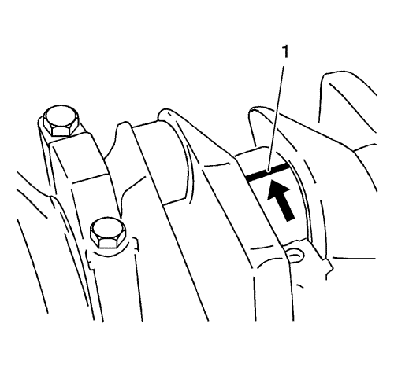
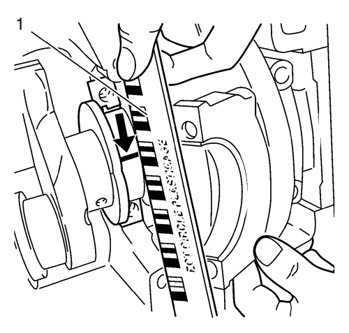
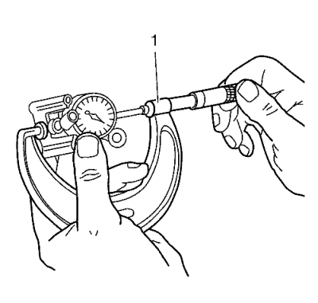
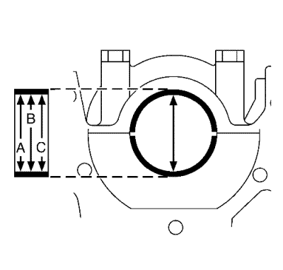
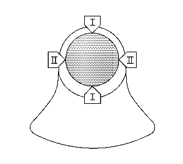

Limpieza y comprobación del cojinete y el cigüeñal 1.6L LDE, LXV y 1.8L 2H0
Herramientas especiales
| • | EN-45059 Kit de goniómetro de par de apriete |
| • | GE-571-B Galga de cuadrante |
Si desea informarse sobre herramientas regionales equivalentes, consultar Herramientas especiales .
Comprobación del juego axial del cigüeñal

Nota : Cigüeñal acoplado con sombreretes de cojinete de cigüeñal.
- Monte el manómetro GE-571-B (1).
| 1.1. | Monte la herramienta de retención en la parte delantera del bloque motor. |
| 1.2. | Coloque la espiga palpadora del comprobador contra el cigüeñal y realice el ajuste. |
- Mida el juego longitudinal del cigüeñal.
| 2.1. | Mueva el cigüeñal en la dirección longitudinal. |
| 2.2. | Juego final permitido del cigüeñal: 0,100–0,202 mm (0,0039–0,0080 pulgadas) |
- Desmonte la galga de cuadrante GE-571-B.
Comprobación de la excentricidad del cigüeñal

Nota: Cigüeñal desmontado.
- Introduzca el cigüeñal en el bloque motor.
- Monte la galga de cuadrante GE-571-B.
| 2.1. | Acóplelo al soporte del bloque motor. |
| 2.2. | Coloque la espiga palpadora del comparador en el muñón del cojinete del cigüeñal y realice el ajuste. |
- Compruebe el juego de giro del cigüeñal.
| 3.1. | Haga girar el cigüeñal de modo uniforme. |
| 3.2. | Máximo juego de giro permitido: 0,03 mm (0,001 pulgadas). |
- Desmonte la galga de cuadrante GE-571-B (1).
Comprobación del juego del cojinete del cigüeñal (con Plastigage)

Nota:
- Coloque el plastigage.
Coloque el plastigage (tira de plástico flexible) alrededor de toda la anchura del muñón del cojinete de biela (1).
Precaución:Consulte Precaución con las fijaciones en la sección Prólogo.
Nota:
| • | Observe el orden de apriete correcto. |
| • | Los pernos pueden volver a utilizarse para comprobar el juego del cojinete del cigüeñal. |
- Monte el sombrerete del cojinete del cigüeñal. Apriete de 3 veces los 2 pernos de sombrerete de cojinete del cigüeñal. Utilice el kit de goniómetro EN-45059:
| 2.1. | Primer paso a 50 N·m (37 lib. pie) |
- Suelte los 2 tornillos del sombrerete del cojinete de cigüeñal.

Nota: Al leer el valor, no confunda los milímetros con las pulgadas de la escala de medición (1).
- Mida el juego del cojinete del cigüeñal.
| 4.1. | Compare la anchura del hilo de plástico aplastado (flecha) con la escala de medición. |
| 4.2. | Juego permitido del cojinete del cigüeñal: 0,005–0,059 mm (0,0002–0,0023 pulgadas). |
Comprobación del juego del cojinete del cigüeñal (con micrómetro de interiores)
Nota:
| • | Observe el orden de apriete correcto. |
| • | Los pernos pueden volver a utilizarse para comprobar el juego del cojinete del cigüeñal. |
- Monte el sombrerete de cojinete del cigüeñal, con las fijaciones de clip del cojinete del cigüeñal, al bloque motor.
Apriete de 3 veces los 2 pernos de sombrerete de cojinete del cigüeñal. Utilice el kit de goniómetro EN-45059:
| 1.1. | Primer paso a 50 N·m (37 lib. pie) |

- Monte la espiga palpadora interior y calíbrela con el micrómetro (1).

- Mida el diámetro del cojinete del cigüeñal en 3 puntos.
| • | Mida los puntos A, B y C con el dispositivo de medición interno. |
| • | Calcule el diámetro medio del cojinete del cigüeñal. |

- Mida el diámetro del muñón de cojinete del cigüeñal en 2 puntos.
Mida con el tornillo micrómetro en los puntos I y II.
- Calcule el diámetro medio del muñón de cojinete del cigüeñal.
Fórmula: I + II/2.
- Determine el juego del cojinete del cigüeñal.
Fórmula de cálculo: diámetro medio del cojinete del cigüeñal menos diámetro medio del muñón de cojinete del cigüeñal.
- Comparación teórica - real.
Juego permitido del cojinete del cigüeñal: 0,005–0,059 mm (0,0002–0,0023 pulgadas).
| © Copyright Chevrolet. Reservados todos los derechos |